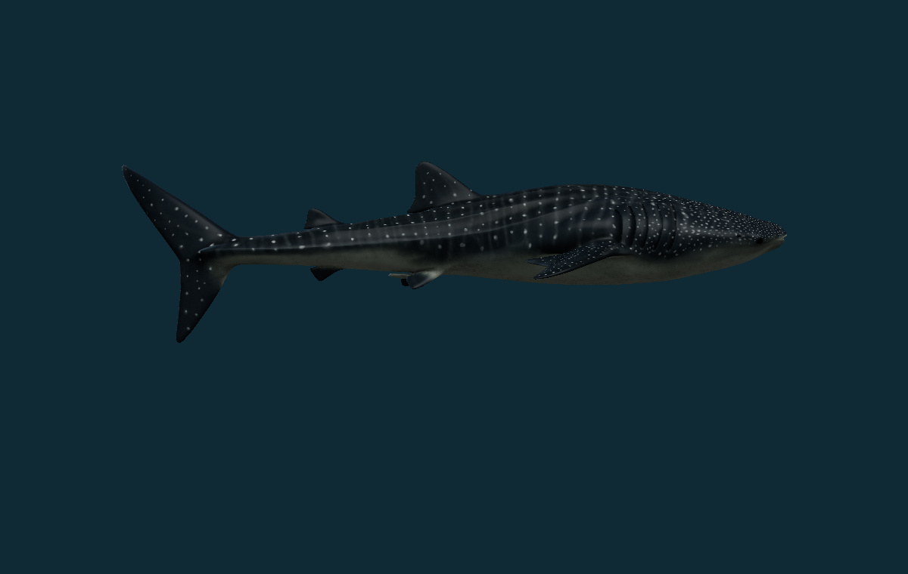
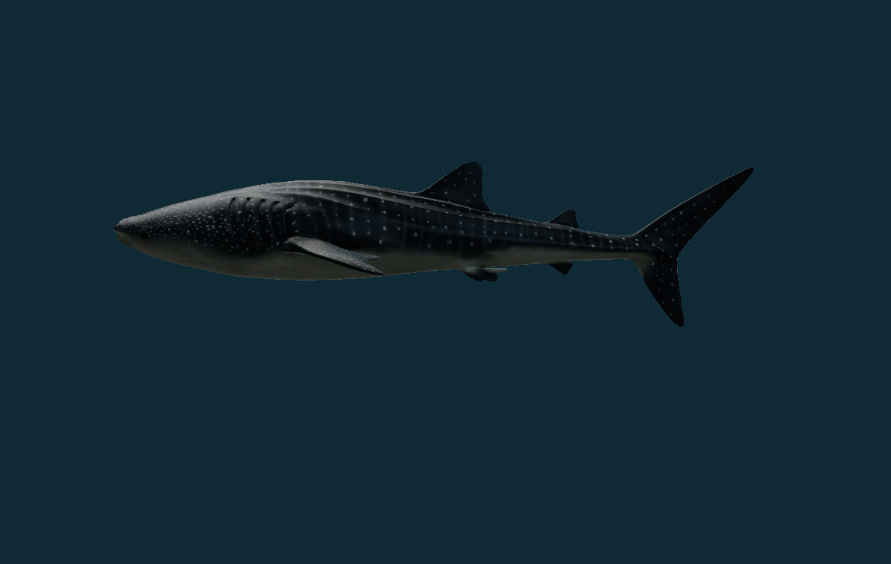
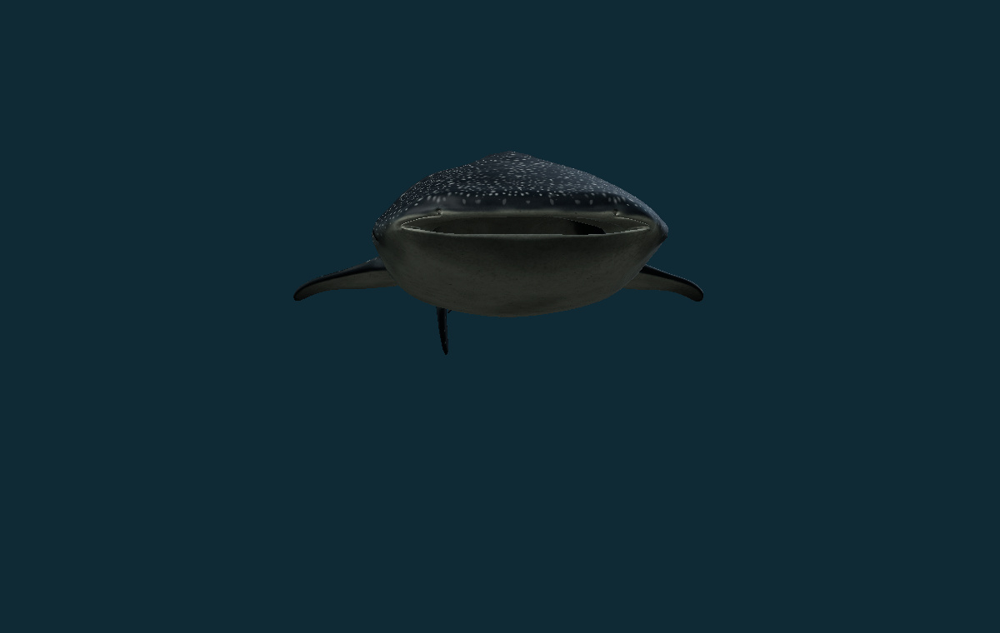
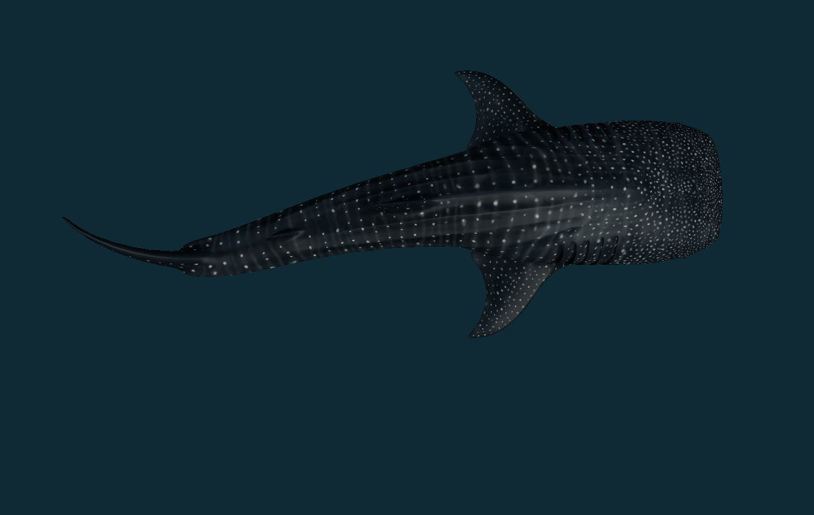
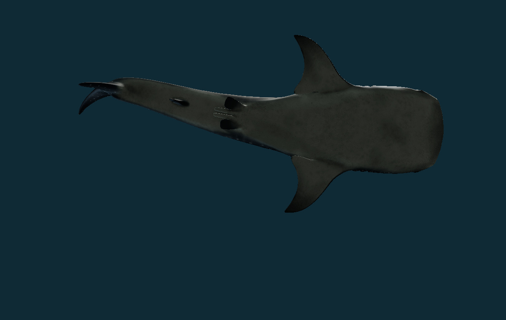
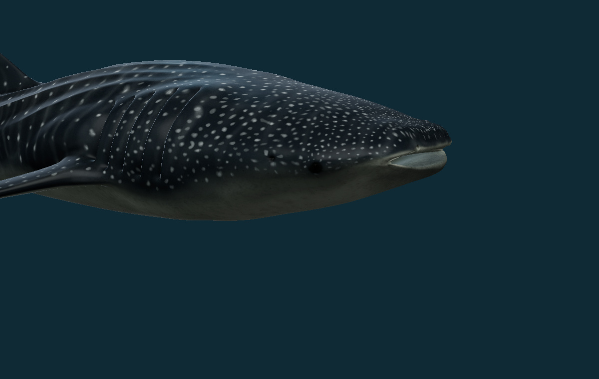
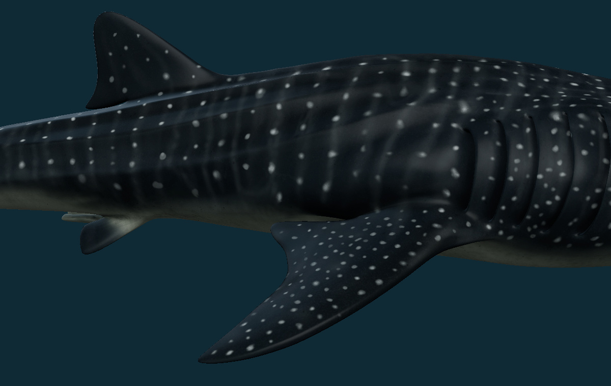
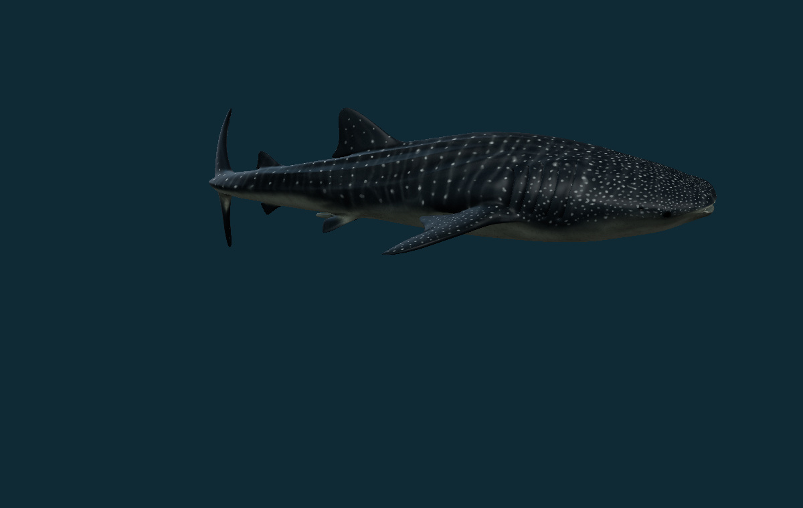

Whale shark: body and skin review
The requested DigitalLife Model99A now supplies the active whale-shark body, skeleton and swimming clip. Its source spot placement and white underside remain, with revised skin color response, fine normal detail, roughness and eye lighting. The previous archive artist model is preserved in the provenance collection.

What changed
| Area | Result | Limit |
|---|---|---|
| Body | Native requested geometry retained:3 meshes,157,312 triangles. Broad flattened head, gill openings, paired fins, ridges and subadult caudal proportions. | No independent morphometric fit. Display normalization establishes no animal size. |
| Skin | Source spot-and-bar layout and countershading retained.4K revised albedo;2K combined normal and rebuilt roughness maps; nonmetallic skin and separate eye response. | Fine relief and optical parameters are authored, not a denticle scan or measured skin reflectance. The source atlas reuses UV space in some regions; that layout is retained. |
| Swimming | Complete source skeleton, weights, inverse bind matrices and109 creator animation channels retained. Native cycle duration5.25 display seconds. | Creator playback is not measured tailbeat frequency, speed, forces or a physiological clock. |
| Physiology | Species-linked external morphology and filter-feeding context are documented. | Internal filter screens, coupled mouth/gill pumping, filtration, swallowing, flow and complete physiology remain unimplemented. Feeding stays unavailable. |
Scientific basis
Whale sharks have a broad flattened head, a short nearly terminal transverse mouth, five gill openings on each side and prominent longitudinal ridges. Two dorsal fins, paired fins, an anal fin and a heterocercal tail are retained in the source reconstruction. These diagnostic features are checked against Smithsonian’s species account.
The pale spot-and-bar pattern over a darker upper surface and white underside follows the source model and the Florida Museum account. Fine skin relief is intentionally restrained: the material suggests texture without claiming microscopic denticle reconstruction. Photorealistic rendering does not establish biological accuracy.
Digital Life’s project account identifies Model99A as a reconstruction of subadult male Mosi (TZ209), using footage from Tanzania in November2022. It is a useful individual body reconstruction, with its source scope retained. The Gleiss et al. locomotion study supplies qualitative context for intermittent swimming; this release does not fit source trajectories or implement a passive-glide controller.
Verification and preservation
All source geometry and UV attributes, skinning data and animation samples match their original fingerprints. The revised GLB embeds all3 material maps and preserves the full creator clip. Nine actual model views were rendered and inspected. Other336 species records,337 identity/taxonomy/photo/occurrence records and37 registered original source payloads are unchanged. Strict revision-ledger reversal preserves historical test fixtures.
Source fingerprints and preservation evidence · Material method and map hashes · Validation scope · Current movement inventory. No paid generation credits were used. No independent biological certification or accuracy percentage is claimed.
Reviewed views








Attribution and reuse
Model99A by DigitalLife3D, CG artists Johnson Martin and Aaron Olsen; supported by Marine Megafauna Foundation and Jon Bayuk, with footage and support by Chris Rohner and Stephanie Venables. Material revision and archive integration: PhenoVoxel Archive. The model and derived maps are CC BY-NC4.0: attribution required, noncommercial use. The source’s attribution and restrictions travel with the download.
GLB SHA256: c7a2a6a742fd7d33f0dde9d8575ad043a8bc14ef57d9a03bb5e73084e91a3674